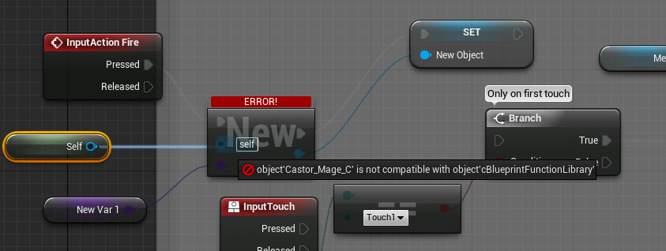
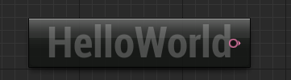
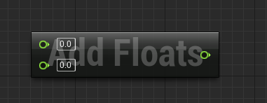
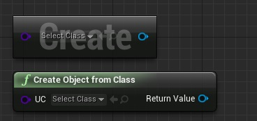

Custom Blueprint Node Creation
Overview
This tutorial will cover how to make a custom blueprint node that you can use to introduce cool C++ powers into your blueprints. This tutorial is rather basic for now, since I've not done much with the code, so there could be steps I'm missing here for handling special programming concepts such as iterators or delegates.
Extending Classes
You can choose which class to extend by using the "Add code to project" option from the File menu and then choosing the class to extend from. This creates a new class with the functionality of the class you extended from (the parent) as well as any functionality you give it in code.
Exposing functions to Blueprint
To do this you must use Function Specifiers, of which there are a couple:
- BlueprintAuthorityOnly
- BlueprintCallable
- BlueprintCosmetic
- BlueprintImplementableEvent
- BlueprintNativeEvent
- BlueprintPure
Of these I've only used BlueprintPure and BlueprintCallable. The former (BlueprintPure) means the function does not affect the owning object in any way and thus creates a node without Exec pins. The latter (BlueprintCallable) makes a function which can be executed in Blueprints - Thus it has Exec pins.
You can also have metadata about the node, like so:
UFUNCTION(BlueprintPure, meta = (DisplayName = "Create Object From Class", CompactNodeTitle = "New", Keywords = "new create blueprint"), Category = Game)
- DisplayName is the full name of the node, shown when you mouse over the node and in the blueprint drop down menu. Its lets you name the node using characters not allowed in C++ function names.
- CompactNodeTitle is the word(s) that appear on the node, such as "New" in the image above. Note that the use of a CompactNodeTitle will cause the parameters to show in the BP node without names. Omit the CompactNodeTitle if having the param names next to the wire connections is important for your node.
- Keywords is the list of keywords that helps you to find node when you search for it using Blueprint drop-down menu. Good example is "Print String" node which you can find also by using keyword "log".
- Category is the category your node will be under in the Blueprint drop-down menu.
If you leave out the "Static" prefix you'll likely get an error which reads "Pin Target must have a connection" error:

Just as a note, if you have the static prefix and still get this issue, try adding "HidePin = "WorldContextObject", DefaultToSelf = "WorldContextObject"," inside your meta=( in UFUNCTION like so:
UFUNCTION(BlueprintPure, meta = (HidePin = "WorldContextObject", DefaultToSelf = "WorldContextObject", DisplayName = "Create Object From Class",
CompactNodeTitle = "New", Keywords = "new create blueprint"), Category = Game)
The error seems to (it comes and goes from what I've seen of it) relate to Self being the actual Blueprint graph, and so it returns the class of the blueprint. However the function is declared in a class that's under a static object - hence it doesn't match its own type. This line hides the target pin and sets the nodes Self to WorldContextObject. For clarity see the above image.
Function code
Nothing special - just code as normal:
(.h File)
UFUNCTION(BlueprintPure, meta = (DisplayName = "Hello World", CompactNodeTitle = "HelloWorld", Keywords = "String Hello World"), Category = Game)
static FText HelloWorld();
(.cpp file)
FText UCreateNewObject::HelloWorld()
{
return FText::FromString("Hello World");
}

Having parameters are the same as well:
(.h File)
UFUNCTION(BlueprintPure, meta = (DisplayName = "Adds floats", CompactNodeTitle = "Add Floats", Keywords = "Float Add"), Category = Game)
static float AddFloats(float fA, float fB);
(.cpp File)
float UCreateNewObject::AddFloats(float fA, float fB)
{
return fA + fB;
}

Note that you might not find your node with "Context Sensitive" ticked.
CompactNodeTitle
If you give a compact node title in the UFUNCTION then the node will not have a header, while if you do give it a CompactNodeTitle it will. You can see the visual difference in the image below. The top node has CompactNodeTitle while the bottom node does not:

Things to look into
These are just somethings I don't know, and think would be good to know - A bit like "things to try by playing around with this tutorial":
- What sets Context Sensitive?
- Check out the enums in ...\Engine\Source\Runtime\CoreUObject\Public\UObject\ObjectBase.h to see more about the various UE macro options
- ( )